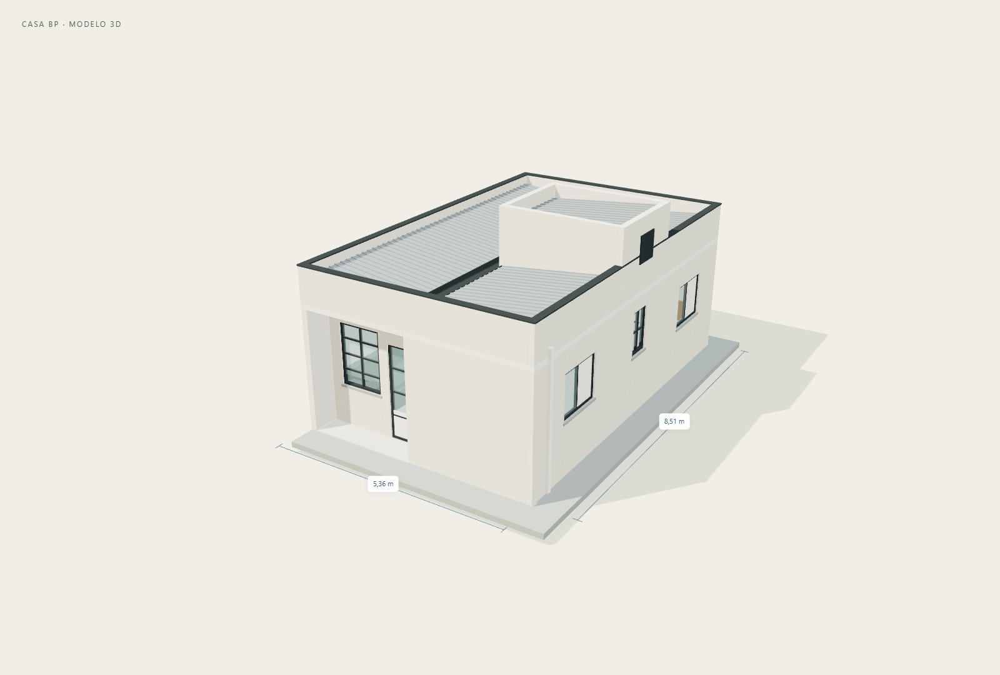
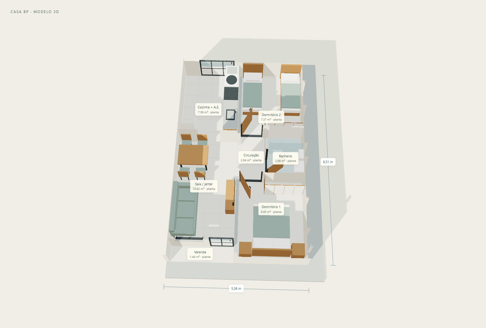
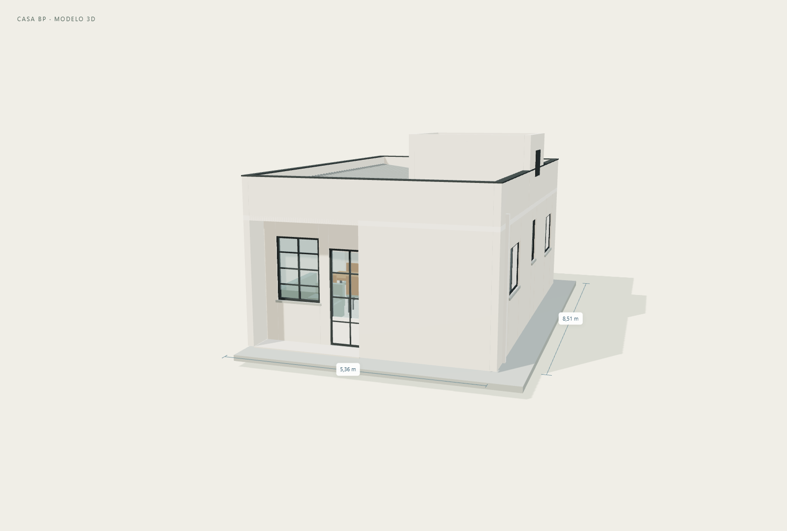
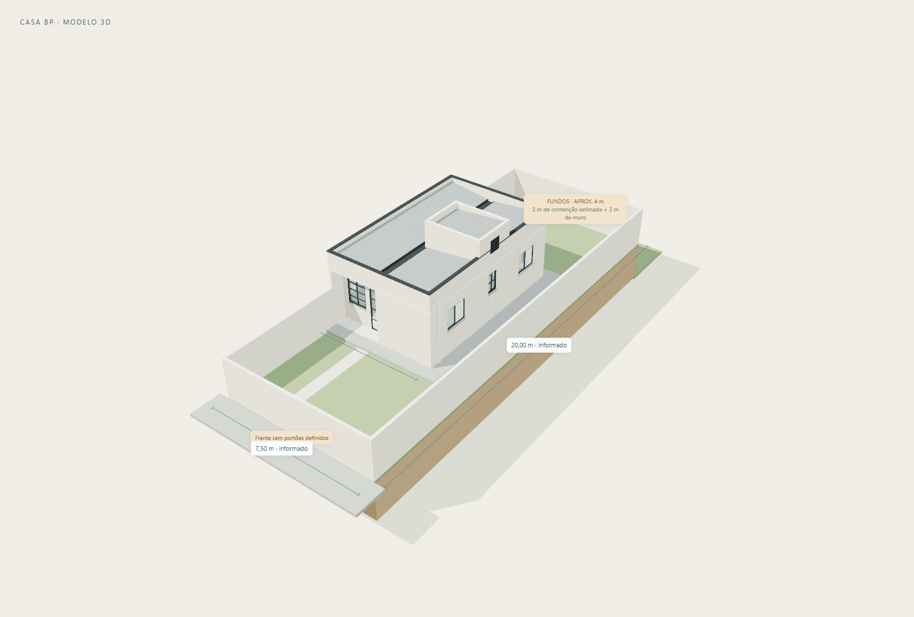
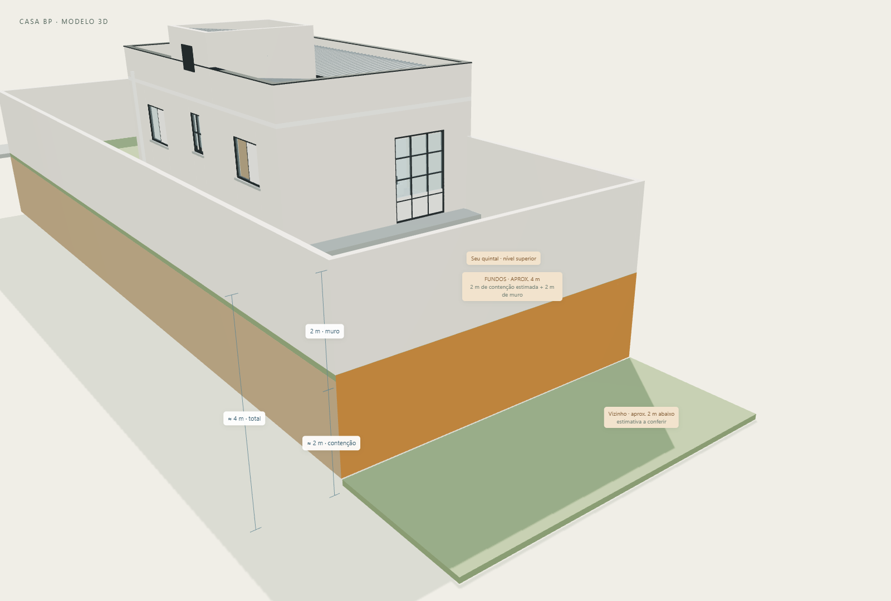

Reconstrução tridimensional do modelo BP_2D_4561.AS.IN, divisa direita, a partir dos três cadernos fornecidos. Esta revisão representa o projeto documental da casa existente, o lote e os fechamentos informados pelo proprietário, com estimativa do desnível nos fundos. Não inclui proposta de ampliação.
Radier e pisos; paredes de 14 cm; sala/jantar; cozinha com área de serviço; dois dormitórios; banheiro; circulação; varanda recuada; portas e janelas; laje e platibandas; quatro panos de telha de fibrocimento com calha central; volume técnico e reservatório de 500 L; alçapão e representação do condutor pluvial. O mobiliário acompanha a disposição da planta humanizada e serve para avaliar o uso dos ambientes.
Terreno de 7,50 × 20,00 m, com muros de 2,00 m acima do terreno. O fechamento da frente está representado contínuo porque os portões ainda não foram definidos. A parede da casa que ocupa a divisa substitui o muro nesse trecho, evitando peças sobrepostas. Nos fundos, a superfície âmbar representa aproximadamente 2,00 m de contenção abaixo do quintal, com muro de 2,00 m acima: cerca de 4,00 m de face total vista pelo vizinho. O desnível é uma estimativa do proprietário, sem medição.
| Item | Medida | Origem |
|---|---|---|
| Dimensão externa | 5,36 × 8,51 m | Cotas da planta baixa |
| Área total declarada | 45,61 m² | Carimbo da planta; 5,36 × 8,51 = 45,6136 m² |
| Área útil declarada | 39,49 m² | Carimbo e soma das áreas indicadas |
| Espessura de parede | 0,14 m | Cotas da planta baixa |
| Radier em planta | 5,96 × 9,71 m | Cotas da implantação |
| Varanda | 2,40 × 0,60 m livres | Planta baixa / humanizada |
| Pé-direito adotado | 2,70 m | Escala gráfica do corte AA; confirmar |
| Topo laje / platibanda / volume técnico | 2,80 / 3,60 / 4,40 m | Estimativas pela escala dos cortes; confirmar |
| Ambiente | Área indicada no PDF | Geometria principal reconstruída |
|---|---|---|
| Sala / jantar | 10,42 m² | 2,40 × 4,34 m livres |
| Cozinha e A.S. | 7,56 m² | 2,40 × 3,15 m livres |
| Dormitório 1 | 8,00 m² | 2,54 × 3,15 m livres |
| Banheiro | 2,66 m² | 1,40 × 1,90 m livres |
| Dormitório 2 | 7,37 m² | 2,54 × 2,90 m livres |
| Circulação | 2,04 m² | Contorno irregular conforme a planta |
| Varanda | 1,44 m² | 2,40 × 0,60 m livres |
As áreas escritas foram preservadas como valores documentais. A circulação foi reconstruída por alinhamentos e passagens, sem forçar sua geometria a coincidir com os 2,04 m². A área total corresponde ao retângulo externo de projeção; inclui a varanda recuada.
| Elemento | Condição | Referência |
|---|---|---|
| Dimensões da casa, paredes, ambientes e radier | cotado | ARQUITETURA.pdf, páginas físicas 3–5 |
| Lote 7,50 × 20,00 m e altura dos muros 2,00 m | informado pelo proprietário | Conversa em 07/11/2026 |
| Recuo frontal 6,00 m; casa encostada na divisa esquerda do desenho | inferido pela implantação | ARQUITETURA.pdf, página física 3; ELÉTRICA.pdf, página física 5 |
| Pé-direito, platibandas, laje e inclinação das telhas | estimado por escala gráfica dos cortes; confirmar | ARQUITETURA.pdf, páginas físicas 9–12 |
| Esquadrias e passagens: larguras, alturas, peitoris e posição fina | estimado por escala gráfica; confirmar | ARQUITETURA.pdf, páginas físicas 4, 9–12 |
| Reservatório de 500 litros; calha central; quatro panos de cobertura | documentado; geometria fina estimada | ARQUITETURA.pdf, páginas físicas 6–10 |
| Mobiliário, cores, materiais e louças | ilustrativo; disposição baseada no layout | ARQUITETURA.pdf, página física 5 |
| Espessura e encontro dos muros; fechamento frontal sem portões | representação provisória | Não definidos nos documentos |
| Arrimo dos fundos | desnível estimado de 2 m e muro superior de 2 m: face total aproximada de 4 m; seção, fundação e drenagem não definidas | Estimativa do proprietário em 07/11/2026; vizinho dos fundos em cota inferior |
A implantação está orientada exatamente como as folhas: fachada frontal na parte inferior da planta, parede cega à esquerda e janelas laterais à direita. A denominação “divisa direita” do modelo foi mantida, sem espelhar os desenhos. Não foi atribuído norte geográfico.
O recuo frontal adotado é 6,00 m, estimado pela escala da implantação; resulta em recuo posterior de 5,49 m e faixa lateral direita de 2,14 m até a face externa da casa. A espessura provisória de 14 cm dos muros não é uma especificação de construção. O piso acabado da casa é Y=0; o quintal está representado em Y=−0,16 m. Muros de 2,00 m acima desse plano atingem Y=1,84 m.
O proprietário estima aproximadamente 2,00 m de desnível até o vizinho dos fundos. Nesta hipótese, o nível inferior é Y=−2,16 m; a contenção vai desse nível até o quintal em Y=−0,16 m, e o muro segue até Y=1,84 m. A face total é de cerca de 4,00 m, sem incluir fundação enterrada. Esses níveis são referências para visualização e devem ser conferidos em campo.
A superfície âmbar não tem espessura estrutural atribuída. Não foram dimensionados arrimo, fundações, armaduras, drenagem ou impermeabilização. O volume de solo representa um corte esquemático do lote; suas faces laterais não significam desníveis reais nas outras divisas. A faixa de terreno do vizinho serve apenas para indicar o nível estimado, sem representar suas dimensões ou topografia.
Os projetos elétrico e hidráulico foram consultados para confirmar o layout, equipamentos, reservatório e posição geral do condutor pluvial. Não foram modeladas as redes embutidas, armaduras, fundações ou instalações completas. A entrega é um modelo arquitetônico, não um modelo de compatibilização das disciplinas. As redes devem ser consideradas antes de propor demolições ou novas áreas molhadas.
| Arquivo | Uso |
|---|---|
| ABRIR-MODELO-3D.html | Visualizador 3D independente, pronto para o navegador. Não requer instalação. |
| casa-bp-modelo.glb | Modelo com materiais, objetos nomeados e camadas. Importável em Blender e outros programas que leem glTF. Unidade: metro, Y para cima. |
| casa-bp-modelo.obj + .mtl | Geometria de intercâmbio com materiais. O formato não declara unidade: importar em metros e indicar Y como eixo vertical. |
| vistas/ | Imagens da fachada, planta 3D e implantação. |
No visualizador, os controles permitem girar e aproximar, mudar vistas, ocultar cobertura e muros, cortar paredes, mostrar ambientes e medir dois pontos. A medição usa os pontos clicados, sem encaixe automático em quinas; conferir cotas precisas no JSON. Os botões GLB e OBJ exportam todas as camadas, mesmo que estejam ocultas na vista.
Esta entrega permite visualizar e estudar alternativas. O dimensionamento de ampliações e de contenções depende do levantamento e do projeto técnico correspondente.
As imagens abaixo são renderizadas da mesma geometria entregue em GLB.




